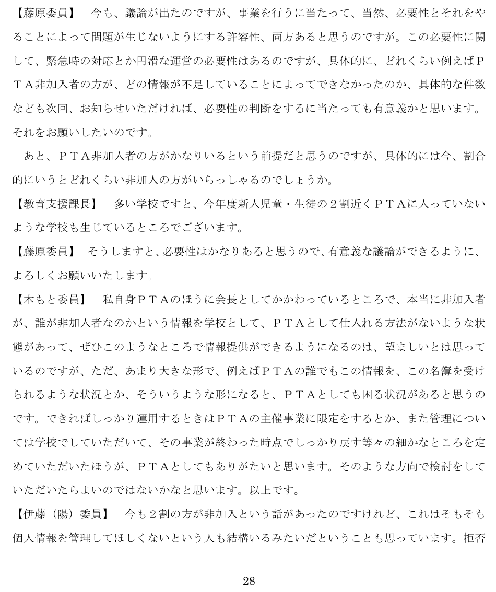
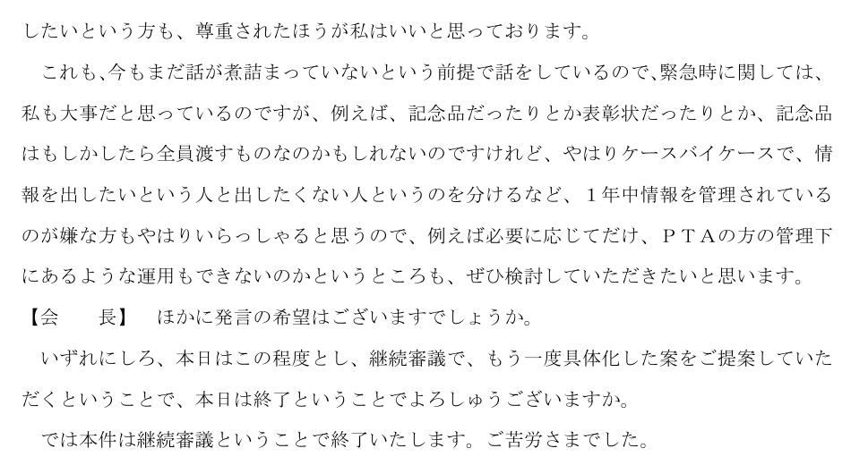

この会議で問われたのは、名簿をどこに保管するかだけではない。保護者がPTAに加入していないときにも、学校は子どもの情報をPTAへ供給するのか。全児童生徒を対象とする活動であれば、全員の情報を年間を通じて保有する必要があるのか。情報をPTAに管理されたくない人の意思を、どう扱うのか。
令和元年度第6回新宿区情報公開・個人情報保護審議会の会議録と諮問資料は、任意加入の実態が、学校とPTAの情報管理の境界を具体的に問う場面を記録している。本稿は、当日の案が承認されず継続審議になった事実を確認したうえで、非加入者の存在を名簿提供の理由にする発想と、学校情報・PTA会員情報を分離する発想との違いを考察する。［1］［2］［3］
1 「2割近く」は、何についての説明だったのか
会議録本文28頁では、藤原委員が、情報不足によって実際にどのような支障が生じたのか、その件数を次回示してほしいと求めた。そのうえで、PTA非加入者の割合を質問している。教育支援課長の答えは次のとおりである。
多い学校ですと、今年度新入児童・生徒の２割近くＰＴＡに入っていないような学校も生じているところでございます。
出典：新宿区情報公開・個人情報保護審議会会議録（2020年1月16日）本文28頁。公式PDFの29ページ目。
「今年度」は2019年度を指す。また、「多い学校ですと」という限定がある。区全体の非加入率、全在校生についての率、全国的な傾向を述べた発言ではない。年度初めや入学当日に集計した数値とも明示されていない。確認できるのは、2020年1月の審議の時点で、その年度の新入児童・生徒に関する非加入の状況がこのように説明されたことである。
さらに、児童生徒自身の加入人数として機械的に読むべきではない。諮問資料34の2頁は、PTAを保護者と教員で構成される団体と説明し、活動対象について「保護者の加入・非加入」を区別している。同じ資料が非加入の児童生徒と呼んでいるのも、保護者の加入状況との関係で理解する必要がある。本稿では、PTAに加入していない保護者とその子どものいる家庭を、文脈に応じて「非加入家庭」と表現する。
「新入家庭の約2割」と統計上確定できるわけではない。公開資料には、分母となる家庭数、加入を家庭ごとに数えたのか、兄弟姉妹をどう処理したのか、学校別の集計表がない。保護者・家庭の加入状況についての発言と読む根拠はあるが、一家庭一会員の集計方式までは確認できない。「新入家庭の段階で相当数の非加入家庭が存在した」という意味は読み取れる一方、家庭数を分母とする20％の統計へ無条件に言い換えることはできない。
それでも、この説明の意味は小さくない。保護者の加入が全員に当然に及んでいるという前提では、教育委員会自身が実態を説明できなくなっていた。すでに、加入している家庭と加入していない家庭が併存する学校を前提に、制度を考える必要があったのである。ただし、この会議録だけから、以前と比較した非加入率の上昇幅や、その理由まで判断することはできない。


2 非加入家庭を含む全員の情報を、毎年度提供する案
諮問資料34の件名は「区立小・中学校ＰＴＡへの児童・生徒名簿の外部提供について」である。当時の新宿区個人情報保護条例12条2項4号を根拠とする諮問として提出された。事業名は「PTAへの活動支援」で、対象者は区立小・中学校に在籍する全児童生徒約12,000人だった。新入児童生徒だけを対象とした提案ではない。
提供するのは氏名とクラス名であり、住所や保護者の電話番号ではない。提供先は各校単位のPTA、記録媒体は紙、提供時期は審議会の承認日以降、毎年度とされている。学校内の施錠保管、管理責任者・使用者の指定、使用簿、複写の管理、学校への管理状況報告、年度末の返却・裁断といった管理方法も用意されていた。資料34-1は、その活用方法と管理体制を図示している。［2］
教育委員会の説明は、PTAが保護者の加入・非加入にかかわらず全児童生徒のために活動する以上、非加入家庭の子どもについても把握する必要がある、というものだった。災害・怪我・連れ去り等の緊急時に学校や保護者へ連絡すること、行事のグループ分け、表彰状・記念品の準備が理由に挙げられている。
ここで確認すべきなのは、活動の対象と、情報を保有する相手の範囲が同一視されている点である。全員に開かれた行事を行うことと、参加の意思表示をしていない人も含め、学校の全名簿をPTAが毎年度受け取ることの間には、なお説明すべき段階がある。全員への利益を目的とする活動であっても、全員の識別情報を常時保有しなければ成立しないとは限らない。
しかも、氏名・クラスの提供は、PTAへの入会申込みとは別の行為である。学校の在籍名簿からPTAの名簿へ情報を移しても、その保護者がPTA会員になったことにはならない。提案されたのは、この区別を保ったまま非加入者の情報も保有する制度であり、その必要性と許容範囲が審議対象になった。
3 審議会は、保管方法より前の問題を問うた
必要性と利用目的――どの場面に、どの情報が必要なのか
会議録22〜24頁では、緊急時の保護者連絡は学校が行えること、氏名・クラスだけの名簿をPTAへ渡すことで何が可能になるのかが議論されている。会長は、PTA主催行事や緊急時という幅のある表現のままでは、想定していない利用にも広がり得るとして、具体的な行事や利用範囲を示すよう求めた。
28頁で藤原委員が求めたのも、抽象的な活動の必要性だけではなく、情報がないことによって実際に生じた支障の説明だった。目的が望ましいことと、その目的のために学校保有情報を外部へ出す必要があることは、別々に検討しなければならない。名簿を適切に保管する約束は、提供の必要性そのものの説明にはならない。
管理体制と提供先――「各校PTA」と書けば相手が確定するのか
24〜26頁では、学校による確認の方法、PTA側の責任者、各校の規約との関係が問われた。三雲委員は、PTAという団体の実体や、代表者・担当者の交代も踏まえた提供先の特定、相手方との取決めを問題にしている。教育委員会は、各校PTAの規約を個別に確認しているわけではないと説明した。
紙と鍵付き金庫を用意しても、誰に渡し、誰が使用を許可し、担当者交代後にも誰が管理を引き継ぐのかは残る。保管用品の仕様と、情報を受け取る組織の責任体制は同じ問題ではない。PTAの自主的な内部運営に、学校がどこまで実際に関与できるのかも、提供案を具体化するうえでの条件になる。
漏えい時の責任――提供後を一律にPTAの問題にできるのか
26〜27頁では、漏えい等が起きた際の責任も議論された。行政側は、PTAが責任を負う場合だけでなく、区側の渡し方や確認の仕方によって区が責任を負う場合もあると説明している。PTAが独自に集めた情報を付加したり、紙の情報を電子化したりする場合を含め、想定する管理範囲を明確にする必要も示された。［1］
審議会には、学校と地域の協力に情報を活用したいという意見もあった。藤原委員は非加入率の説明を受けて必要性を認める発言をし、PTA会長として関わる木もと委員も、利用者・主催事業を限定し、事業終了後に返却するような提供を望んでいる。したがって、議論を「委員全員が提供に反対した」と要約することはできない。活用を望む意見と、提供の範囲・管理を具体化すべきだという要求が、同じ審議の中にあった。
4 非加入者は、情報の足りない「未処理の会員」ではない
会議録28〜29頁の伊藤（陽）委員の発言は、この問題にもう一つの視点を加えている。非加入の人には個人情報を管理してほしくない人もいるのではないかとして、拒否する意思を尊重すること、情報を出したい人と出したくない人を区別すること、年間を通じた保有ではなく必要時だけの取扱いを検討することを求めた。
この発言は、非加入者全員の動機を調査して確定したものではない。しかし、非加入を単なる加入手続の遅れとして扱えないことを、審議の場で明示している。加入する意思がないことと、情報を提供する意思がないことは同一ではないが、どちらも本人の選択として存在し得る。PTAへの加入、行事への参加、学校からPTAへの情報提供の承諾は、別々の意思表示である。
この区別を失うと、入会していないことが、PTAに渡すべき情報が学校側に残っているという意味に変わってしまう。学校の在籍名簿を使ってPTA側の不足を補う制度は、本人がPTAとの関係を結んでいない理由を確認しないまま、その関係の一部である情報管理だけを先に成立させることになる。
非加入の事実から、すべての情報提供を拒否していると推定することも適切ではない。それでも、全員分の提供を当然の出発点にする理由にはならない。誰が、どの活動のために、どの期間、どの情報を必要とするのかを先に定め、本人の選択を組み込むことが必要になる。


5 当日は継続審議。その後の最終処理は未確認
会長は、もう一度具体化した案を提案するよう求め、本件を継続審議として終えている。公式の開催・審議結果ページも、資料34の案件の結果を「継続審議」と記載する。したがって、2020年1月16日の案は、その場では承認されなかった。これが一次資料で確定できる結論である。［3］
継続審議は、不承認の最終決定や違法認定と同じではない。会長は使えるように案を準備することも求めており、修正後の検討を予定した発言になっている。当日の結果から、新宿区がPTAへの名簿提供を一律に違法と判断したとは書けない。
後続審議の追跡範囲（2026年10月2日確認）
新宿区の公式公開一覧に掲載された、2020年1月29日から2026年7月2日までの39会議について、議題・審議結果と公開会議録を確認した。直後の令和元年度第7回（1月29日）、第8回（2月6日）、第9回（3月26日）も含む。同じ件名の再諮問や、本件と特定できる修正案・承認・不承認・撤回は確認できなかった。公開記録から最終処理を特定できないという調査結果であり、そのような決定が存在しないことの証明ではない。未公開資料や担当課への照会による確認までは行っていない。［4］
本稿が分析するのは、承認済みの制度や実施済みの毎年度提供ではなく、非加入者を含む提供案に対して当日の審議会で実際に提起された問題である。この区別を保つことで、未確認の結末を補って事例の意味を強めることを避けられる。
6 他自治体との違い――何を、どの手続で改めたのか
川口市・平成26年度：本人の請求を受け、提供中止を処理した記録
2015年8月13日の川口市審議会に提出された平成26年度運用報告は、42頁の表11に、6月16日受付の2件を記載している。保護者・児童から学校が取得した情報や学校名簿等について、決定は「訂正等」、その内容は「PTA等の外郭団体への提供の中止」とされる。会議の説明も、PTAへの提供停止を求めたもので、親と子を分けた2件だったとしている。［5］
新宿区が制度を導入する前の諮問を記録しているのに対し、川口市は本人の請求と行政上の処理結果を記録している。学校へ情報を渡すことと、PTA等へ渡すことを本人が区別し、提供の中止を求め得るという、具体的な行政実務が比較点になる。裁判所がすべてのPTA提供を違法と判断した事例ではない。
岡山市：広い利用目的の表現自体を削除する方向
岡山市教育委員会事務局学校教育部教職員課は、当委員会宛ての2026年1月26日回答で、学校の「PTA、同窓会等への連絡」は教育活動上の連絡だと説明し、2月2日回答では第三者への名簿提供を含まないと説明した。その後、2月6日の回答は次のように方針を変更している。
岡山市の個人情報の保護方針（案）にある２（９）「PTA、同窓会等へ連絡を行うため」については、削除し、学校園へ周知する方向ですすめてまいります。
出典：同課2026年2月6日回答メール原文（当委員会宛て、該当段落）。原文を直接確認した行政回答であり、自治体が一般公開した資料のURLは確認できていない。学校園での削除・周知完了も、この回答だけでは確認できない。［6］
新宿区の問題が提供先・使用場面の限定だったのに対し、岡山市では、学校が情報を持つ際の利用目的の書き方が見直しの対象になった。「PTAのため」という幅のある記載と、学校が実際に行う連絡・教育活動とを区別する必要を示す比較である。
長野県：全国共通法制の下で、学校長への周知方針を回答
長野県の「県民ホットライン」は、学校からPTAへ本人同意なく情報が渡されたという2023年7月21日受付の意見に対し、7月27日、法69条の原則と例外を説明し、全県の公立学校長に周知して改善につなげると回答している。申出人が述べた事実と、県の制度説明・対応方針は区別して読む必要がある。［7］
新宿区の旧条例による諮問と異なり、こちらは2023年4月以降の個人情報保護法を前提とする回答である。ただし、今回直接確認できたのは周知方針を示す公開回答であり、別途の通知原本や周知完了まで確認したわけではない。
広島市：通知の記録と、公文書不存在決定の審査を分ける
2026年8月3日付けの諮問第396号答申は、過去の学校からPTAへの学級名簿提供をめぐる公文書開示請求・不存在決定を検討している。答申本文2〜3頁には、教育委員会が2023年11月30日、各学校長に外部提供は原則禁止であり、例外提供には本人同意等の要件が必要と通知したという説明が記録されている。［8］
直接確認したのは答申であり、通知原本ではない。また、答申の結論は公文書不存在決定を妥当とするもので、過去のPTA提供を一括して適法・違法と認定したものではない。新宿区の導入前の審議、川口市の本人請求、岡山市の目的記載の見直し、長野県の周知方針とともに、行政が情報の流れを点検する異なる手続として位置付けられる。
7 2020年の条例判断と、現行法61条・69条の検討を分ける
新宿区の諮問資料は、当時の区条例12条2項4号による外部提供の審議として作成された。地方公共団体に対する個人情報保護法の全国共通ルールが2023年4月に施行された後の判断枠組みとは区別しなければならない。現在の条文を2020年の審議会に遡って適用したり、当時の継続審議を現行法の違反認定に読み替えたりすることはできない。
現在の検討では、まず61条による、学校が法令の定める所掌事務又は業務を遂行するために必要な範囲で情報を保有し、利用目的をできる限り特定するという段階がある。次に、具体的な利用・提供がその目的のためといえるか、目的外であれば69条の例外要件に該当するかを検討する。利用目的の欄にPTA活動と書くことだけで、学校の所掌事務や提供の必要性を作り出せるわけではない。
個人情報保護委員会事務局が2026年3月27日に掲載した「公立学校とPTAの間で個人情報のやり取りをするためのポイント」は、5〜7頁でこの点を説明している。7頁の例では、学校が教育活動として共催する行事と、学校の関与が限定的なPTA主催行事とで、同じような目的記載でも目的内提供の判断が分かれる。学校とPTAは別組織であり、活動の名称だけでなく、学校業務との具体的な関係を確認する必要がある。［9］
一方、公立学校の目的内提供にまで一律に本人同意が必要とする説明も正確ではない。行政機関等編Q&AのQ3-3-3は、法69条1項の目的内提供には本人同意を要しないと説明している。目的外提供については、法令に基づく場合を除き原則禁止であり、69条2項1号の本人同意や、同項4号の「特別の理由」等の要件と、本人又は第三者の権利利益を不当に侵害するおそれがないことを検討する。［10］
個人情報保護委員会（PPC）の学校・PTA資料8頁は、本人同意を根拠とする提供では、同意が得られない部分の削除・マスキングが必要とする。また、目的外提供の「特別の理由」は、PTAが活動しやすくなるという一般的な説明だけで当然に成立する要件ではない。恒常的な提供案を検討する場合には、Q&AのQ3-3-2が69条2項を臨時的な利用・提供の規定と説明していることも踏まえ、目的の設定・変更と例外提供の関係を整理する必要がある。
責任の整理も、過去の議論をそのまま移せない。個人情報保護委員会（PPC）資料9〜10頁は、個人情報の取扱いの委託に伴う提供と、単なる提供を区別する。委託では委託先の監督や、一定の漏えい等事案での報告・本人通知が問題になる。単なる提供には同じ監督義務があるわけではないが、必要があると認めるときは、法70条により利用目的・利用方法の制限や必要な管理措置を求める。学校が保管場所を用意するという事情だけで、どちらの関係かは決まらない。
これらは、今日同様の案が出された場合に確認すべき論点である。2020年の資料だけでは、現在の具体的な学校業務、利用目的、同意、提供条件まで確定できない。「現在なら当然違法」と断定するための資料として扱うべきではない。
8 非加入者の存在は、情報の分離を必要にする
新宿区の案の出発点は、加入していない家庭も活動対象だから、その子どもの情報が必要になるというものだった。しかし、ここから学校による全員分の恒常的提供だけが導かれるわけではない。PTAが保有する会員情報は、原則としてPTAが加入者本人から、目的を示して必要な項目を取得することを出発点にできる。個人情報保護委員会（PPC）資料3頁も、そもそも学校とPTAとの情報のやり取りが必要かを問うとともに、PTAが独自に取得する事例に言及している。［9］
学校の名簿は、学校に在籍する子どもの名簿である。PTAの会員名簿は、PTAに加入した人の名簿である。全員に開かれた行事の参加者名簿は、その行事に参加する人の名簿である。この三つにはそれぞれ成立する理由があり、対象者が重なるからといって一つの情報管理へ統合する必要はない。
たとえば、PTAへの加入案内や公開行事の案内を、個人を特定しない掲示・公開ページで周知することはできる。PTA主催の希望制行事で必要な情報は、会員資格とは切り離し、参加を希望する本人から取得する方式を検討できる。取得する項目、使用期間、緊急時の連絡方法を、その行事に応じて定めればよい。非加入者全員を洗い出す名簿を持つことが、これらの前提になるわけではない。
学校の教育活動として全員が参加する行事なら、まず学校側の業務と安全確保の責任を明確にし、PTAが協力する具体的な作業に情報が必要かを検討する。学校との適法な連携を否定するのではなく、学校の作業への協力と、PTA内部の会員管理とを分けて設計するのである。子どもへの対応を会員・非会員によって不利益に分けることも、情報分離の理由にはならない。
非加入者が存在する以上、学校の在籍情報をPTAの会員情報へ当然に流す前提を見直す必要がある。加入しない家庭が増えるほど、学校の名簿を渡してPTA側の情報を完成させるのではなく、両者の情報が一致しないことを正常な状態として受け止める。この方向転換が、公私分離の実務上の意味である。
9 この審議が現在に残す問い
新宿区の会議録は、2020年の時点で、非加入家庭の存在が行政にとっても見過ごせない具体的な事情となっていたことを示している。その事情を把握したうえで教育委員会が全員分の毎年度提供を提案し、審議会が必要性、利用場面、受領組織、管理、責任、拒否者対応を問うた。この一連の記録に、本件の意義がある。
「PTA活動に必要だから」という理由は、検討の出発点にはなっても、学校保有情報をPTAへ当然に供給できるという結論にはならない。全員を対象とする活動の公共的な価値と、任意団体が誰の情報を持つかは、別の問いである。
本稿が導くのは、非加入者の存在によって名簿提供の必要が自動的に強まるという結論ではなく、学校情報とPTA会員情報を分ける必要が、より明確になるという分析である。これは審議会の最終判断を代弁するものではない。当日の継続審議と未確認の後続処理を区別しながら、学校への在籍、任意団体への加入、個人情報の提供を、それぞれ独立して扱う制度の必要性を読み取るものである。
一次資料と確認箇所
新宿区会議録は、表紙がPDFの1ページ目にあるため、本文の印刷頁よりPDFのページ位置が1つ後になる。以下では両方を記す。閲覧・原文確認日：2026年10月2日。
- 新宿区「令和元年度第6回情報公開・個人情報保護審議会会議録」、開催2020年1月16日。PTA案件は本文20〜29頁（PDF21〜30ページ目）。行政説明20〜22頁、利用目的22〜24頁、管理・提供先24〜26頁、責任26〜27頁、「2割」28頁、拒否者対応28〜29頁、当日の結論29頁。
- 同会議・資料34「区立小・中学校PTAへの児童・生徒名簿の外部提供について」、1〜3頁。条例根拠1頁、保護者の加入・非加入と全児童生徒約12,000人の対象・理由・管理案2頁、情報項目・相手方・毎年度提供3頁。資料34-1「PTAでの活用方法及び管理体制について」、1頁。
- 新宿区「令和元年度第6回新宿区情報公開・個人情報保護審議会」開催・審議結果、開催2020年1月16日。資料34の結果は「継続審議」。HTMLのため頁なし。
- 新宿区情報公開・個人情報保護審議会・公開会議一覧。後続39会議の議題・結果・会議録を追跡。直後の令和元年度第7回（2020年1月29日）、第8回（2月6日）、第9回（3月26日）を含む。最終処理は未確認。
- 川口市、2015年8月13日開催。「平成27年度第1回川口市情報公開・個人情報保護運営審議会」資料中の平成26年度運用報告、42頁・表11「保有個人情報訂正等請求内容一覧」（PDF48ページ目）。公式会議結果「第1回第1部川口市情報公開・個人情報運営審議会結果」の同表に関する説明も確認。
- 岡山市教育委員会事務局学校教育部教職員課、当委員会宛て2026年1月26日、2月2日、2月6日回答メール原文。削除方針は2月6日回答の本文段落（本稿第6節に掲載）。メールのため頁なし。一般公開された自治体資料のURLと、変更完了は未確認。
- 長野県「公立学校から個人情報第三者提供の原則禁止について」、意見受付2023年7月21日、回答7月27日。HTMLのため頁なし。ページ更新日8月31日と回答日を区別。公開回答で周知方針を確認し、通知原本は未確認。
- 広島市情報公開・個人情報保護審査会「公文書不存在決定に係る審査請求に対する裁決について（答申）」、諮問第396号事案、2026年8月3日。2023年11月30日通知に関する説明は答申本文2〜3頁（PDF3〜4ページ目）。結論は本文1頁。公式答申集から原本を確認。
- 個人情報保護委員会事務局「公立学校とPTAの間で個人情報のやり取りをするためのポイント」、令和8年3月、公式新着情報の掲載日2026年3月27日。必要性・独自取得3頁、目的の特定・具体例5〜7頁、目的外提供8頁、委託・提供・責任9〜10頁、本人同意11頁、PTA側の規律13〜14頁。審議会配付版ではなく、公式広報資料ページ掲載の公開版を使用。
- 個人情報保護委員会事務局「個人情報の保護に関する法律についてのQ&A（行政機関等編）」、令和8年4月更新。Q3-3-2・Q3-3-3はPDF版の本文12頁（PDF28ページ目）。保有・利用目的はQ3-2-2、目的外の外部団体提供はQ3-3-8も確認。条文参照：個人情報の保護に関する法律（e-Gov法令検索）。